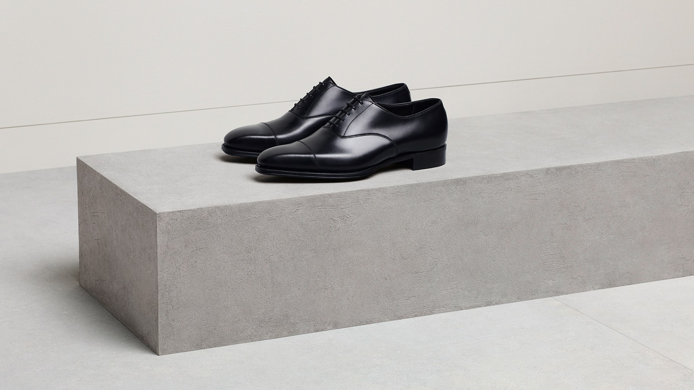
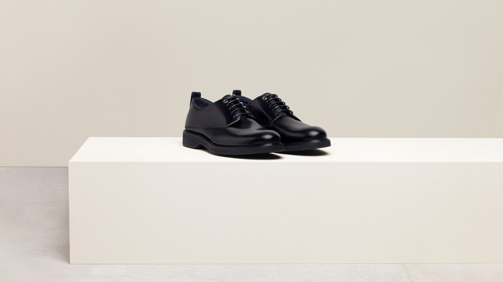
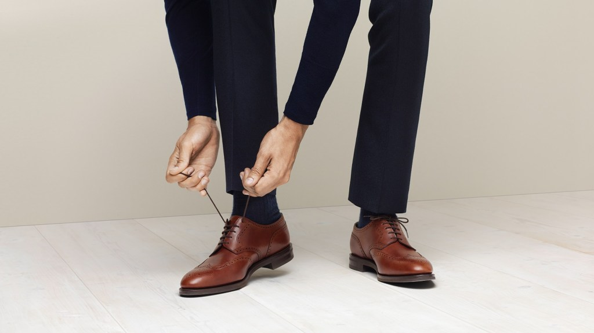
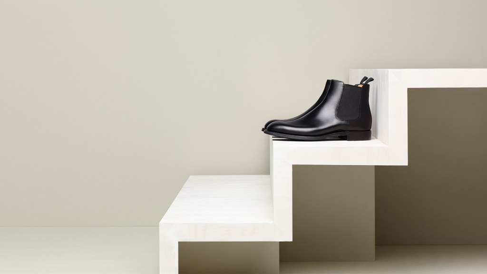
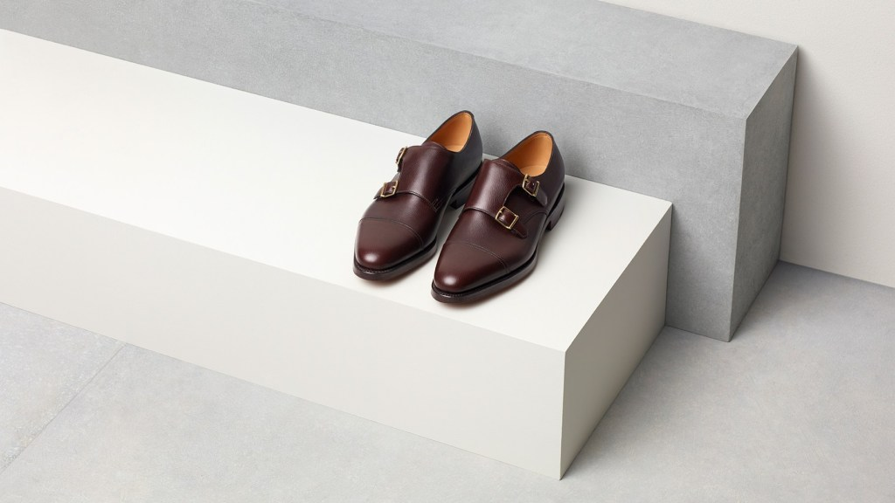
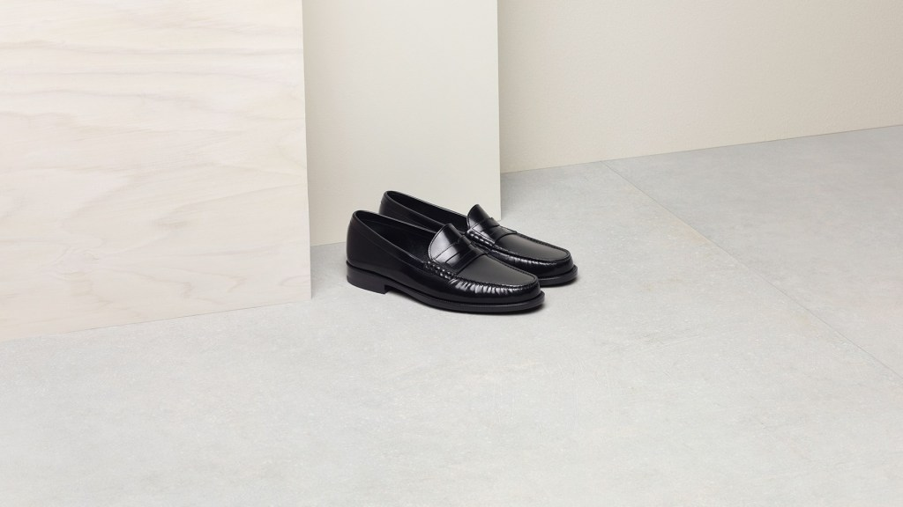
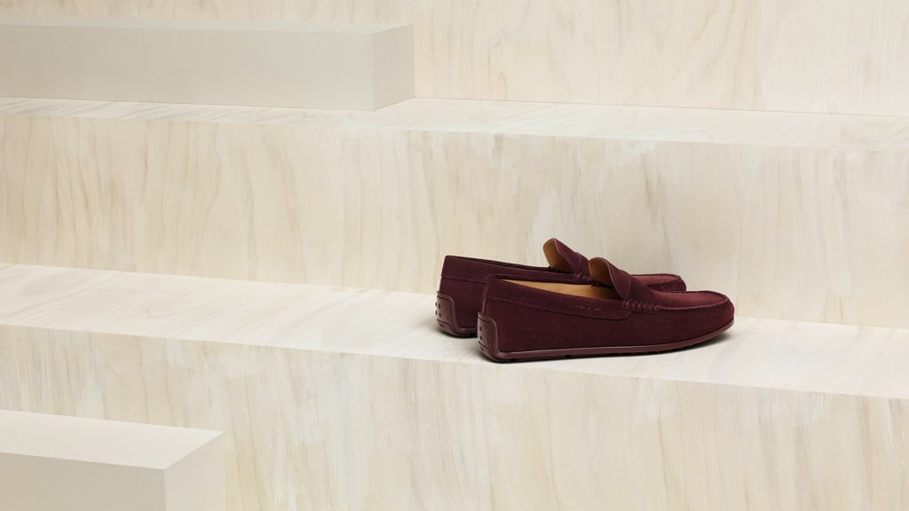
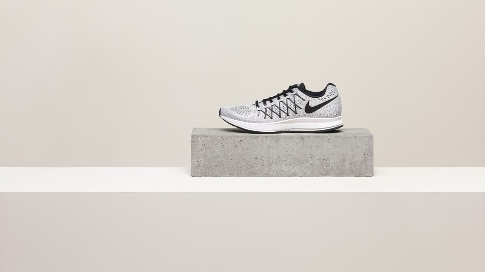

Начиная с узкой аудитории, сникерсы постепенно захватили мир. Это уже не случайная пара обуви на выходные. Теперь ты спокойно можешь носить их с костюмом или джинсами по любому поводу. Еще и прослывешь стильным чудаком. Обрати только внимание на их уязвимость к грязи и пыли. Правильный и постоянный уход за кедами требует времени и дисциплины. А без этого, они потеряют свое очарование и эксклюзивность
Оксфорды

Да, друг, это именно те оксфорды, что ты видел в фильме Kingsman. Сделанные специально под заказ этой премьеры. И да, они действительно прекрасны. Думаю ты уже представляешь как мягко они сидят на твоей ноге и как взгляды прохожих задерживаются на тебе дольше обычного. Не удивительно. Хоть оксфорды являются самой первой парой обуви, которую должен покупать себе мужчина, в нашем обществе такому правилу еще надо научится. Это идеальная, а в некоторых случаях и единственно возможная обувь под классический костюм
Дерби

Если ты знаешь отличие дерби от оксфордов, то считай, что прошел первую ступень посвящения в джентльмены. Конечно же дело в шнуровке. Именно она лишает классические оксфорды формальности, превращая их в более повседневные дерби. Если на твоей работе такой разницы могут и не заметить, то перед важным светским приемом лучше подбери себе классную пару оксфордов. А дерби оставь на ежедневное использование
Броги

Брогами называют любую обувь которая имеет перфорацию. То есть это могут быть и оксфорды, и дерби, но со специальной перфорацией. Броги можно поделить еще и на подкатегории в зависимости от сложности и площади перфорации. Пара коричневых брог идеально будет смотреться как с неформальными синими джинсами, так и классическими брюками
Челси

Наступление осени заставляет вспоминать челси с особой теплотой. Ранее эта обувь была синонимом рок-н-рола. И сейчас часто их носят с узкими, рваными джинсами, сохраняя дух бунтарства. Мы же ценим эту обувь за жесткость кожи, которая позволят им служить очень долго, а также за отличную защиту щиколотки, что становится особо актуально при наших холодных осенних вечерах. Челси — это самый гармоничный переход от летней легкой обуви к тяжеловатым зимним ботинкам
Монки

Монки делятся на две категории: с одной застежкой и с двумя. Все зависит от случая и одежды, какую ты одеваешь. Но вариант обуви однозначно более чем интересный. Так как они малопопулярны в странах СНГ, ты будешь выделятся среди остальных мужчин, как только обзаведешься этими красавцами. По сути являются антиподом оксфордов
Пенни-лоферы

Лето пришло и с ним приятные ощущения от носки неформальной обуви. Хотя модель на фото и является больше классической, основное их преимущество это удобство. Напомним, что пенни-лоферы стали популярны в 50-х годах XX столетия в кампусах элитных университетов США. Сейчас же их популярность только растет. И понятно почему. Идеальное сочетание комфорта и красоты. На уровне со сникерсами, лоферы служат идеальной обувью для формирования стиля smart casual
Мокасины

Это замшевое чудо отлично подойдет для отдыха на яхте. Такие мокасины прекрасны тем, что защищают твои ноги, дарят им комфорт и приятные ощущения, а ты со временем можешь даже забыть, что в них. Действительно королевская обувь. Важно только подобрать правильное сочетание с одеждой, а то можно с короля превратится в клоуна
Кроссовки

Чтобы классно чувствовать себя в оксфордах на королевских приемах, важно держать себя в форме. Эта модель на фото специально создана для тех, кто понимает, что такое естественный бег и понимает как правильно следует выбирать кроссовки для бега